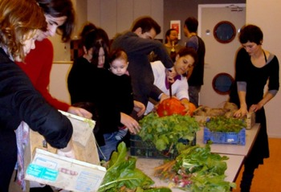

Qu est-ce qu'une AMAP?:
Plus connu sous l’acronyme AMAP, les Associations pour le Maintien d’une Agriculture Paysanne permettent à un groupe de consommateurs et un producteur (le plus souvent biologique) de s’associer. Tandis que le consommateur partenaire de l’exploitation s’engage à acheter la production d’un agriculteur en la payant à l’avance, le producteur, lui, s’engage à fournir des produits de qualité cultivés ou fabriqués dans le respect de l’environnement et des animaux. Une fois par semaine, il partage sa récolte de produits frais de saison. Au préalable, les consommateurs ont choisi avec l’agriculteur les légumes à cultiver, le prix de la souscription, et les modalités de distribution des produits (fréquence, lieu, horaires…).
Les adhérents, à tour de rôle, sont responsables de la distribution de la semaine. Ils sont chargé d’installer les cagettes de produits que le fermier a apportées, d’indiquer sur un tableau la composition du panier de la semaine, et d’accueillir les autres adhérents.
Le maraîcher assiste à la distribution et répond volontiers aux questions des adhérents sur l’avancée des cultures, sur la prochaine sortie à la ferme, etc. Leur relation est direct, sans intermédiaire. D’un point de vue écologique, on ne peut y voir que des avantages : production intégralement consommée donc sans pertes pour le producteur, environnement préservé… Pour le consommateur, les avantages ne s’arrêtent pas au prix du panier. C’est aussi la garantie d’acheter des produits de saison de qualité, le plus souvent bio, dont on peut tracer l’origine. C’est aussi un moyen pour les citadins de renouer avec la nature et d’apprendre, ou réapprendre, à consommer les produits de saison. Sa dimension sociale est également attrayante puisqu’elle permet de rencontrer des gens de son quartier.
Pour le producteur, c’est l’assurance de vendre sa production et d’avoir un revenu régulier ; de pouvoir consacrer du temps à améliorer la qualité des produits au lieu de passer du temps à les vendre ; de moins gaspiller, même les produits les moins « beaux » mais bons sont vendus ; d’être indépendant des systèmes de grande distribution. Les prix des produits, généralement équivalents aux tarifs proposés en grandes surfaces pour une qualité bien supérieure, sont rendu possible du fait de l’absence de gâchis, de l’absence d’intermédiaires entre le producteur et les consommateurs, et d’un emballage minimum voir absent. Ces formes d’associations et d’engagements entre consommateurs et agriculteurs ne datent pas d’hier. Inspirées des Seikatsu, clubs de consommateurs nés au Japon il y a plus de 40 ans, les plus développées sont aujourd’hui regroupées sous le terme de Community Supported Agriculture (CSA) aux Etats-Unis. En France, le mouvement n’a réellement commencé qu’en 2001 mais s’est développé de façon exponentielle. En 2011, on en dénombrait déjà plus de 1600.
Ainsi, les Associations pour le Maintien d’une Agriculture Paysanne ont crée une nouvelle économie solidaire entre la ville et la campagne, plus humaine et respectueuse de l’environnement. Elles assurent la continuité et l’existence de fermes et d’agriculture paysanne locales pour avant tout préserver une alimentation de qualité.